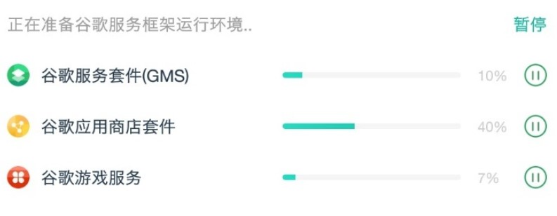
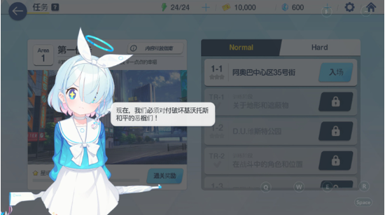

OurPlay 深度盘点：一款工具搞定外服手游的三道坎
谷歌环境、网络加速、语言障碍——外服手游的三大门槛，OurPlay 试图一站式解决。这篇盘点把它的能力面完整铺开，帮你判断值不值得装。
外服手游玩家都熟悉那几道坎：先得把谷歌三件套装好让账号能登，然后找个稳的加速器把延迟压下来，最后还得对着满屏日文韩文干瞪眼。市面上有的工具只管环境，有的只管加速，汉化又得另找补丁组。OurPlay 的官方网站把这三件事塞进同一个应用里，到底做得怎么样？这篇盘点从能力域出发，系统性地梳理它能做什么、亮点在哪、边界又在哪里。
GMS 套件：把最折腾的那步自动化了
谷歌移动服务（GMS）套件是所有外服手游的地基——没有它，游戏连登录界面都进不去。国内安卓环境装 GMS 是出了名的折腾：机型兼容性、版本匹配、谷歌框架与商店的顺序，任何一步出错就得重来。OurPlay 的做法是在应用内部自带一套虚拟引擎，把完整的 GMS 套件预装在这个隔离环境里。用户不需要手动下载任何 APK 或刷入框架，导入游戏时系统自动把它装进虚拟环境，账号登录这一关直接打通。
这套方案的亮点在于"零配置"和"自动维护"。零配置意味着从官方下载后打开就能用，不需要懂 GMS 是什么也能正常玩游戏。自动维护则解决了后续的烦恼：OurPlay 会同步更新内置的谷歌套件，当 GMS 有安全补丁或 API 升级时，应用本体更新后套件也跟着迭代，用户不用再跟着游戏社区的教程手动重装。从评论区的反馈来看，这一点确实击中了很多玩家的痛点——以前装一次 GMS 要半小时，现在点一下导入就完事了。

加速引擎：节点选择与抗丢包技术
网络加速是外服体验的第二个关键点。OurPlay 的加速引擎经历了多轮迭代，2026 年的更新中上线的极速 Pro+ 模式和 UDP 抗丢包技术是目前的主力卖点。极速 Pro+ 针对的是对延迟敏感的竞技类游戏，而 UDP 抗丢包则解决了跨运营商线路上最常见的丢包重传问题。实际使用中，节点选择是影响加速效果的核心变量——应用内提供了多线路节点列表，支持手动切换和自动推荐两种模式，节点怎么选的细节在OurPlay文档里有更完整的说明。
值得一提的是电脑版的加速体验。手机端加速大家都熟悉，电脑版是 2024 年 6 月才上线的相对年轻的产品。从商店描述和社区反馈来看，电脑版完整同步了手机端的加速能力，并额外针对大屏做了界面适配——游戏库直接以图标网格呈现，加速状态实时显示在底部栏。对于习惯在模拟器上玩外服手游、又嫌模拟器本身性能开销大的玩家来说，电脑版提供了一个更轻量的替代方案。
一键汉化：实时转换，不碰游戏包体
语言是外服手游的第三道坎，也是最容易被忽视的一道。游戏进了、加速稳了，满屏日文韩文照样劝退。OurPlay 的汉化功能走的是实时转换路线——游戏原包不动，运行时把文本转成中文。这种方案的好处有三个：不用下载汉化补丁、游戏可以正常更新、关掉就能回到原文。三个覆盖层面分别是剧情文本（主线对话、活动剧情）、技能说明（技能描述、装备属性）和界面菜单（按钮、设置页、公告）。
汉化主攻的方向是日文和韩文游戏，这也是当前外服玩家语言障碍最大的区域。边狱巴士、碧蓝档案、赛马娘、世界计划、咒术回战这些日系大作都在支持列表里。手机端和电脑端都能开，电脑版的汉化开关在加速界面上，随时可以切换原文和中文模式。不过汉化有边界——不是所有游戏都能做到完整覆盖，技术上反编译层面加密的游戏文本无法穿透，这是工具类汉化的固有局限。

会员体系与社区：从工具到生态的延伸
OurPlay 的功能不止三个核心能力。应用内有一套会员体系和星球社区，试图把单纯的工具使用体验延伸成一个玩家生态。星球社区里有大量玩家互助帖，网络类、账号类问题先搜社区再找客服，多数都有现成答案。官方社媒在抖音、B站、微信公众号、小红书四个平台运营，各自侧重不同的内容形式——公众号发公告和下载入口，抖音 B 站做功能演示，小红书分享新游情报。
反馈渠道的分层也比较清晰：应用内常见问题和社区搜帖是第一优先级，解决不了走应用内人工客服，涉及账号和支付问题必须走人工。提交反馈时带上机型、版本号、问题描述和已尝试的排查步骤，能显著提高一次解决的概率。对于工具类应用来说，这套社区互助 + 分层客服的组合比单纯留一个邮箱要贴心得多。
短板也要说：哪些地方做得不够好
功能面板铺完，也该客观说说它的局限。首先是强制更新的体验——部分旧版本会被限制使用，这是工具类应用应对兼容性问题的常见做法，但对那些只想稳定玩现有游戏、不想折腾更新的老用户来说并不友好。其次是汉化的覆盖边界，加密文本穿不透意味着有些游戏只能做到界面汉化、剧情还是原文，这不是 OurPlay 的问题，是所有实时汉化方案的共同天花板。
还有一个值得注意的点是合规边界。工具合规不代表所有用法都合规——官方多次强调加速的对象是合规应用与游戏，账号交易、共享等行为的风险由用户自行承担。开发者上海卓安信息科技有正规的 APP 备案和商标，也通过了主流安全软件检测，但用户自己的操作边界还是要清楚。最后，电脑版上线时间较晚，功能迭代节奏和手机端不完全同步，某些手机端的新功能可能需要等一段时间才能在电脑版上看到。
什么样的人该用它
盘点完能力面和短板，最后画一下用户画像。如果你属于下面三类人群，OurPlay 大概率适合你。
第一类是日系韩系外服手游的重度玩家。这部分人对 GMS 环境的折腾、加速器的延迟波动、日文韩文的语言障碍都有切身之痛，OurPlay 的三合一方案直接命中所有痛点——装一个应用就能把三件事全搞定，不用在 GMS 教程、加速器评测、汉化补丁之间反复切换。
第二类是想入门外服但被门槛吓退的新手玩家。手动装 GMS、选加速器、找汉化补丁，这些操作对非技术用户来说门槛太高。OurPlay 的零配置体验把入门成本降到最低，导入游戏 → 自动配环境 → 一键加速，几个步骤就能正常玩上，对新人非常友好。
第三类是偏好电脑端大屏体验的模拟器用户。如果你习惯用模拟器在电脑上玩外服手游，但又嫌模拟器本身的性能开销大、兼容性问题多，OurPlay 电脑版提供了一个更轻量的替代方案——不用装 Android 模拟器，直接在 Windows 上加速和运行外服游戏，系统资源占用更低。
总结一下，OurPlay 的核心价值在于"把分散的体验环节整合到一起"——GMS、加速、汉化这三件事，以前需要三个不同的工具配合才能完成，现在一个应用就能搞定。它不是每个单项都做到极致，但在"一站式"这个维度上确实省去了大量折腾。至于这款应用的详细中文说明资料，我在 GitHub、Gitee 和 GitCode 三个平台上各维护了一份同步副本：GitHub、Gitee、GitCode，方便不同网络环境的读者随时查阅。